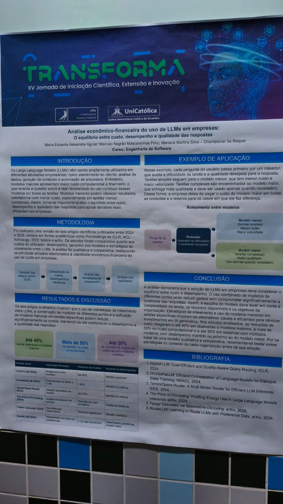
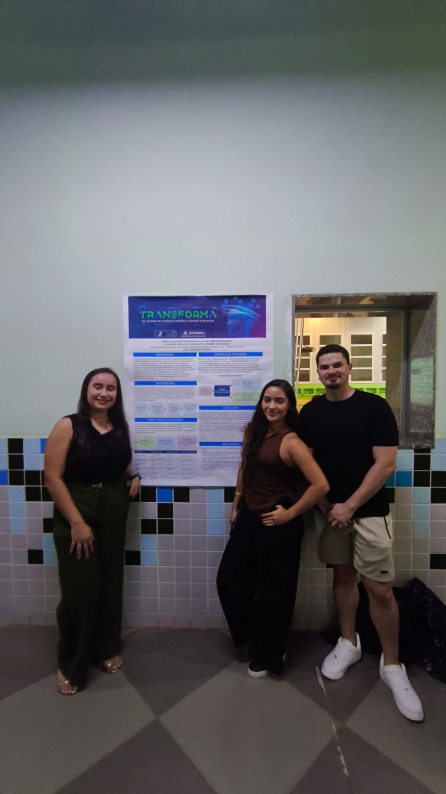

Estudo mostra como a empresa pode pagar menos sem usar o modelo maior em toda pergunta
Revisão de seis artigos recentes indica que um roteador manda tarefas simples ao modelo menor e reserva o modelo maior para o que exige mais qualidade.
Por Carlos Henrique Cardoso da Silva Rocha, Daniel Carvalho Silva e fernando alves ferreira. Palmas, 7 de outubro de 2026.

Objetivo do projeto
O trabalho analisa o equilíbrio entre custo, desempenho e qualidade quando uma empresa usa modelos de linguagem de grande porte. A pergunta é se dá para manter respostas satisfatórias gastando menos do que se gastaria ao mandar toda consulta para o modelo maior.
O caminho escolhido foi comparar estudos publicados entre 2024 e 2026. O banner reúne seis artigos e observa custos de utilização, desempenho, tamanho dos modelos e estratégias de roteamento.
No exemplo desenhado pela equipe, cada pergunta passa primeiro por um roteador. Ele olha a dificuldade da tarefa e a qualidade desejada. O modelo menor fica com o que é simples. O maior só entra quando a resposta precisa ser melhor.
Problema a ser resolvido
Empresas já usam esses modelos em atendimento, análise de dados, geração de conteúdo e automação. O modelo maior entrega mais qualidade, mas custa mais em processamento e em dinheiro.
Usar esse modelo em toda pergunta paga capacidade que muitas tarefas não exigem. Modelos menores podem bastar no que é simples e respondem com mais velocidade. Sem um critério de escolha, a conta sobe e a operação não fica mais eficiente.
O banner trata esse desequilíbrio como o problema central. A empresa precisa saber quando a qualidade extra compensa o preço e quando o modelo menor resolve.
Área de atuação
O recorte é a viabilidade econômico-financeira do uso desses modelos dentro de empresas. Não é a construção de um modelo novo. É a leitura de como rotear consultas entre modelos de portes diferentes.
A pesquisa é qualitativa e comparativa. Os artigos saíram de anais do ICLR, da ACL Anthology, do IEEE Xplore e do arXiv. O método tem quatro passos: seleção dos artigos, comparação de custos, desempenho e eficiência, análise das estratégias de roteamento e síntese dos resultados.
O banner foi apresentado na XV Jornada de Iniciação Científica, Extensão e Inovação, a TransForma, no Centro Universitário Católica do Tocantins.
Público-alvo
O texto se dirige a quem decide tecnologia dentro da empresa: a pessoa que autoriza o gasto com modelos de linguagem e precisa explicar por que uma consulta foi para o modelo caro.
Também interessa a quem opera atendimento, análise de dados ou automação e vê tarefas simples e complexas misturadas na mesma fila. O roteador separa essas filas.
O banner não descreve um setor único, como comércio ou indústria. O público é a organização que já usa ou pretende usar esses modelos e quer testar o roteamento no próprio contexto antes de adotá-lo.
Partes interessadas
Os autores são Maria Eduarda Alexandre Aguiar, Marcelo Negrão Mascarenhas Filho e Mariana Martins Silva, do curso de Engenharia de Software. A orientação é da professora Ila Raquel.
De um lado estão as empresas que pagam a consulta. De outro, as equipes que dependem da qualidade da resposta em tarefas complexas e da velocidade nas tarefas simples. O roteador existe para não obrigar todo mundo a usar o mesmo modelo.
Os seis estudos revisados também são parte do trabalho. Eles fornecem as estratégias e os percentuais. O banner não cita uma empresa visitada nem um teste feito pela própria equipe em um cliente.
Estado do mercado e concorrentes
O mercado já discute como escolher o modelo conforme a pergunta, em vez de fixar um só. O banner não compara produtos comerciais. Ele compara seis artigos acadêmicos e resume três faixas: até 40% menos chamadas a modelos maiores, mais de 50% de redução no custo computacional e até 30% de redução de custos em sistemas com vários modelos.
RouteLLM
O RouteLLM, citado no próprio banner, aprende a rotear com base em preferências. Na tabela da equipe, essa estratégia aparece como mais de duas vezes mais econômica, com desempenho próximo ao do modelo maior. O código aberto está no repositório do projeto. Diferente de um produto fechado, ele é uma ferramenta de pesquisa que a empresa ainda precisa adaptar e testar.
OpenRouter
A OpenRouter oferece uma porta de entrada única para centenas de modelos, com preços distintos e troca de fornecedor se um deles falha. Ela ocupa o mesmo problema do banner: não pagar o modelo mais caro em toda consulta. O banner não avalia essa plataforma. A diferença é que a OpenRouter já opera como serviço, enquanto o trabalho da UniCatólica é uma revisão qualitativa e recomenda testar a estratégia em cada organização.
Diferencial
O banner não apresenta um roteador criado pela equipe. O diferencial está na síntese: juntar seis estudos recentes e traduzir o roteamento em um exemplo simples, com a pergunta do usuário, o modelo menor e o modelo maior.
Na tabela, o Hybrid LLM reduz custos em até 40% e mantém a qualidade. O OrchestraLLM passa de 50% e mantém ou melhora o desempenho. O TensorOpera Router chega a até 30%. O RouteLLM fica mais de duas vezes mais econômico. Outros dois artigos olham o consumo de energia e a decodificação especulativa.
A conclusão pede cautela. A escolha do modelo deve considerar a complexidade da tarefa, os recursos disponíveis e o objetivo da organização. Por ser uma revisão, e não um teste dentro de uma empresa, o material recomenda experimentar a estratégia no contexto local antes de adotá-la.
Tecnologias
O objeto do estudo são os modelos de linguagem de grande porte e o roteamento entre um modelo menor, mais barato e mais rápido, e um modelo maior, usado só quando a qualidade exige. A equipe não informa uma marca de modelo nem diz ter programado o roteador.
A comparação usou artigos de 2024 a 2026 obtidos no ICLR, na ACL Anthology, no IEEE Xplore e no arXiv. As estratégias citadas incluem roteamento entre modelos, orquestração de modelos menores e maiores, seleção automática, análise de energia, decodificação especulativa e roteamento por preferências.
No desenho do banner, o roteador avalia a dificuldade e a qualidade desejada antes de encaminhar a pergunta. Assim a empresa deixa de pagar o modelo maior em todas as consultas.
Análise crítica do trio
Pontos fortes
A pergunta é direta e os números do banner são fáceis de ler: menos chamadas ao modelo maior, queda de custo e qualidade mantida ou próxima. O exemplo do roteador explica a ideia sem exigir que o leitor domine os seis artigos. A conclusão não promete economia automática.
Pontos a melhorar
O trabalho não testa uma empresa real. Não há orçamento de implantação, nem o nome dos modelos menor e maior, nem a medida do mercado. A revisão é qualitativa, e a própria equipe avisa que os percentuais vêm dos estudos analisados.
Sugestão
Antes de adotar o roteamento, a organização pode separar um conjunto de perguntas simples e outro de perguntas complexas, passar as duas filas pelo critério do banner e comparar custo e qualidade com o hábito de usar só o modelo maior.
Equipe e autorização
O projeto visitado é de Maria Eduarda Alexandre Aguiar, Marcelo Negrão Mascarenhas Filho e Mariana Martins Silva, com orientação da professora Ila Raquel, no curso de Engenharia de Software.
O trio da cobertura informa que os projetos visitados autorizaram a publicação. O aceite precisa ficar em documento ou vídeo restrito a quem tem o link, com o nome deste projeto e o nome de quem autorizou.
Esta página não traz telefone, e-mail, endereço ou rede social. Se alguém pedir a retirada de uma foto, ela sai do site e do repositório.
Galeria

![[Descrever a foto 3 do projeto 2]](img/projeto2-03.jpg)
![[Descrever a foto 4 do projeto 2]](img/projeto2-04.jpg)
![[Descrever a selfie do trio no projeto 2]](img/projeto2-05.jpg)